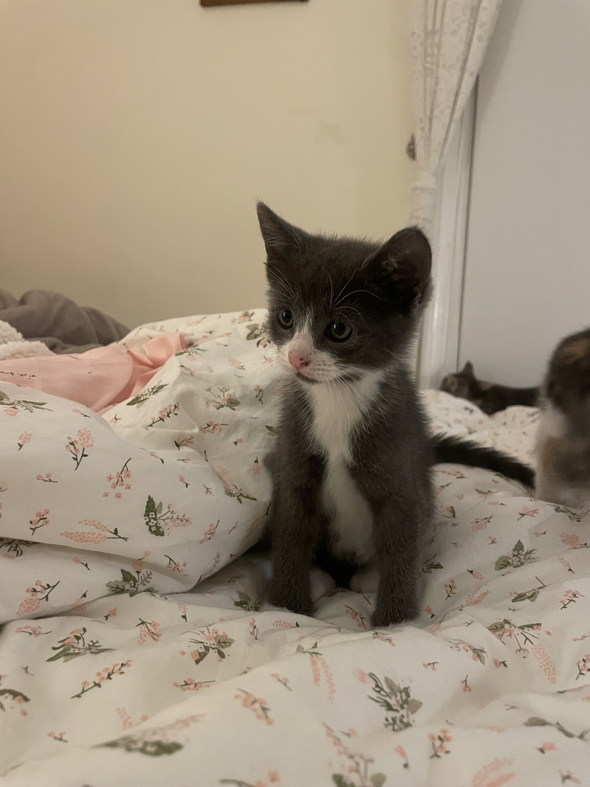

Hi! More about me:
- I'm from Arcadia, California.
- I have 5 cats at home.
- My favorite color is light pink.
- My go to drink is an iced brown sugar shaken espresso with salted caramel cold foam from Starbucks.
- My favorite place to study at UCLA is the Rosenfeld Library.
- I like playing Sudoku
- I've visited Hawaii, NYC, Seattle, Las Vegas, Tokyo, and Seoul.
- I want to visit Zion National Park and Niagara Falls. I want to get into hiking but I never have the time.
- My favorite animes include Death Note, Attack on Titan, Full Metal Alchemist Brotherhood.
- My favorite TV shows include Squid Games, Arcane, and Gossip Girl.
This is Greycat

